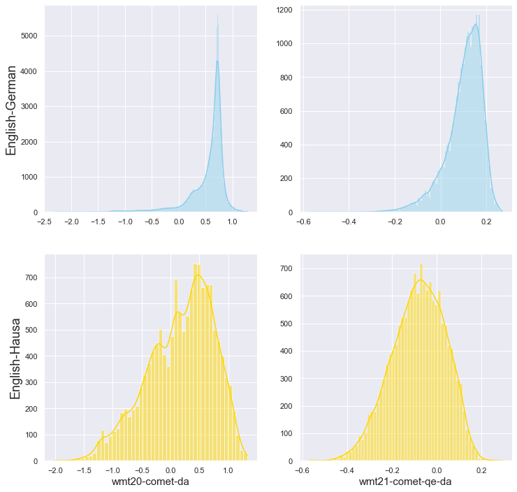

Frequently Asked Questions
Since we released COMET we have received several questions related to interpretabilty of the scores and usage. In this section we try to address these questions the best we can!
Is there a theoretical range of values for the COMET regressor?
Before we dig deeper into details about COMET scores I would like to clarify something:
Absolute scores via automatic metrics are meaningless (what does 31 BLEU mean without context? it can be both awesome score for News EN-Finnish or really bad score for EN-French), and pretrained metrics only amplify it by using different scales for different languages and especially different domains.
Check [Kocmi et al. 2021] and our discussion here: #18
Most COMET models are trained to regress on a specific quality assessment and in most cases we normalize those quality scores to obtain a z-score. This means that theoretically our models are unbounded! The score itself has no direct interpretation but they correctly rank translations and systems according to their quality!
Also, depending on the data that they were used to train, different models might have different score ranges. We observed that most scores for our wmt20-comet-da fall between -1.5 and 1, while our wmt21-comet-qe-da produces scores between -0.2 and 0.2.

Which COMET model should I use?
For general purpose MT evaluation we recommend you to use wmt20-comet-da. This is the most stable model we have. It has been studied by several different authors and so far it seems to correlate well with different types of human assessments in different domains and languages.
Nonetheless, for the WMT 2021 shared task we developed several models that predict Multidimensional Quality Metrics (MQM) rather than DA’s. The MQM models have similar performance in terms of correlation with Direct Assessments and higher correlation with MQM annotations. Use wmt21-comet-mqm if you wish to have a proxy for MQM.
For evaluating models without a reference we recommend the models trained for our participation in the WMT21 shared task, namely: wmt21-comet-qe-da for higher correlations with DA, and wmt21-comet-qe-mqm for higher correlations with MQM.
Where can I find the data used to train COMET models?
Direct Assessments
Every year the WMT News Translation task organizers collect thousands of quality annotations in the form of Direct Assessments. Most COMET models use that data either in the form of z-scores or in the form of relative-ranks.
I’ll leave here a table with links for that data.
| year | DA | relative ranks | paper |
|---|---|---|---|
| 2017 | 🔗 | 🔗 | Results of the WMT17 Metrics Shared Task |
| 2018 | 🔗 | 🔗 | Results of the WMT18 Metrics Shared Task |
| 2019 | 🔗 | 🔗 | Results of the WMT19 Metrics Shared Task |
| 2020 | 🔗 | 🔗 | Results of the WMT21 Metrics Shared Task |
| 2021 | 🔗 | 🔗 | Results of the WMT21 Metrics Shared Task |
Multidimensional Quality Metrics
In the last editions of the WMT Metrics shared task the organizers decided to run evaluation of MT based on Multidimensional Quality Metrics (MQM) based on findings that crowd-sourced Direct Assessments are noisy and do not correlate well with annotations done by experts [Freitag, et al. 2021].
| year | MQM | paper |
|---|---|---|
| 2020 | 🔗 | A Large-Scale Study of Human Evaluation for Machine Translation |
| 2021 | 🔗 | Results of the WMT21 Metrics Shared Task |
Please cite the corresponding papers if you use any of these data!